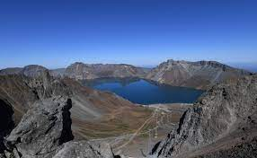

<!DOCTYPE html>
<html lang="en">
<head>
    <meta charset="UTF-8">
    <meta http-equiv="X-UA-Compatible" content="IE=edge">
    <meta name="viewport" content="width=device-width, initial-scale=1.0">
    <title>애국가</title>
</head>
<body>
    
</body>
</html>
<h1><애국가></h1>

<section><h3>1절</h3>

<p><i>동해물과 백두산이 마르고 닳도록</i><br>
    하나님이 보우하사 우리나라만세<br>
    <sup>무궁화</sup> 삼천리 화려강<sub>산</sub><br>
    대한사랑 대한으로 길이 <del>보전하세</del></p></section>
<figure><article><a href="https://terms.naver.com/entry.naver?docId=1100048&cid=40942&categoryId=33165">백두산</a></article></figure>
<hr>


<section><h3>2절</h3></section>
<p><b>남산</b> 위에 저 <b>소나무</b> 철갑을 두른 듯<br>
    바람 서리 불변함은 우리 기상일세<br>
    무궁화 삼천리 화려 강산<br>
    대한 사람 대한으로 길이 보전하세</p>
            <figure><article><a href="https://terms.naver.com/entry.naver?docId=5781963&cid=62861&categoryId=62861">소나무</a></article></figure>
            <hr>

    
    <section><h3>3절</h3></section>
    <p>가을 하늘 공활한데 <sup>높고</sup> 구름 없이<br>
        밝은 달은 우리 가슴 <del>일편단심일세</del><br>
        무궁화 삼천리 <sub>화려 강산</sub><br>
        대한 사람 대한으로 길이 <ins>보전하세</ins></p>
    <figure><article><a href="https://terms.naver.com/entry.naver?docId=1150164&cid=40942&categoryId=32725">코스모스</a></article></figure>
        <hr>
    
    
    <section><h3>4절</h3></section>
    <p>이 <del>기상과</del> 이 맘으로 <ins>충성을 다하여</ins><br>
        괴로우나 즐거우나 나라 사랑하세<br>
        <sup>무궁화</sup> <sub>삼천리</sub> 화려 강산<br>
        대한 사람 대한으로 길이 보전하세</p>
    <figure>
        <article><a href="https://terms.naver.com/entry.naver?docId=3571098&cid=58840&categoryId=58856">태극기</a></article></figure>
        <hr>
    

</ul>

<h2><a href="https://terms.naver.com/entry.naver?docId=3615147&cid=59416&categoryId=59417">애국가바로가기</a></h2>